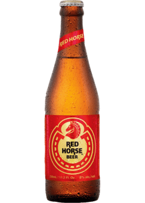

Jollibee is the largest fast food chain in the Philippines, operating a nationwide network of over 750 stores. A dominant market leader in the Philippines, Jollibee enjoys the lion's share of the local market that is more than all the other multinational brands combined. The company has also embarked on an aggressive international expansion plan in the USA, Vietnam, Hong Kong, Saudi Arabia, Qatar and Brunei, firmly establishing itself as a growing international QSR player.
